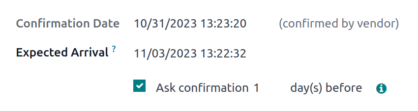
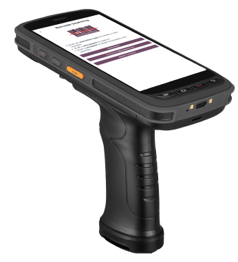
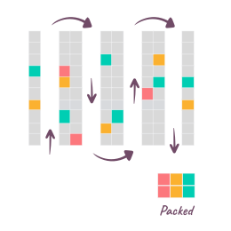
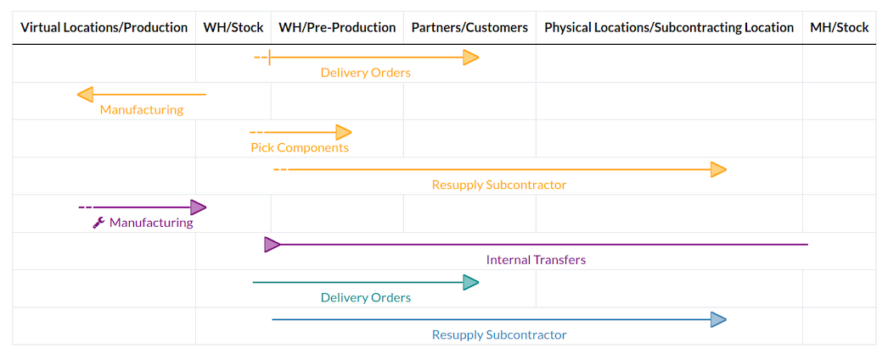
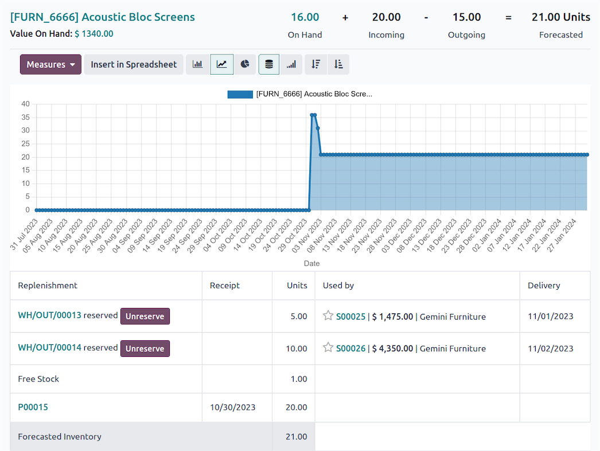

TechNext turns Odoo Inventory into a single source of truth for Auntie Gaik Lean's pantry — every sale draws down its ingredients, so the numbers on screen match the shelves.
The pantry never empties mid-service. Set minimum and maximum levels and Odoo proposes — or automatically raises — the purchase order. It can even nudge the supplier to confirm the delivery a few days ahead.

Log deliveries against the order, run a quick quality check, and shelve stock with put-away rules that keep the fast-moving items within easy reach. Less walking, fewer mistakes on a busy delivery morning.

Track lots, batches and expiry dates in real time, and look up any item in a second. Cycle counts keep the records honest without ever closing the store-room for a full stock take.

Odoo supports several picking strategies, so gathering ingredients for prep or a big pre-order takes the shortest path.

Group tasks by area and regroup at one point — handy for a larger back store.

Gather several orders in one trip to save time — ideal for small items.

Combine multiple orders into one pick and consolidate at the end.
When the eatery ships catering or supplies between outlets, Odoo handles the labels, quality checks and different pack sizes — boxes, crates or pallets — in one place.
Receive stock and run counts fast — scans work offline and read barcodes, QR and GS-1, even for items without a barcode.
Map how stock moves between store-room, kitchen and outlets, and let Odoo plan the transfers automatically.

Keep the value of the store-room correct in the books, with FIFO, average or standard costing.
Stock earmarked for a booking or pre-order is set aside, so it isn't accidentally used elsewhere.

Follow any lot from the supplier delivery to the dish it went into — live reports on stock and movements.

Stock ties into sales, purchasing and the recipes, so everything stays in step.